1과목: 안전관리론
1. 다음 중 교육심리학의 학습이론에 관한 설명으로 옳은 것은?
2. 다음 중 헤드십(head-ship)의 특성으로 옳지 않은 것은?
3. 다음 중 하인리히 방식의 재해코스트 산정에 있어 직접비에 해당되지 않은 것은?
4. 다음 중 무재해운동의 이념에서 “선취의 원칙”을 가장 적절하게 설명한 것은?
5. 다음 중 안전ㆍ보건교육계획의 수립시 고려할 사항으로 가장 거리가 먼 것은?
6. 다음 중 몇 사람의 전문가에 의하여 과제에 관한 견해를 발표한 뒤에 참가자로 하여금 의견이나 질문을 하게 하여 토의하는 방법을 무엇이라 하는가?
7. 다음 중 산업안전보건법령상 사업내 안전ㆍ보건교육에 있어 관리감독자의 정기안전보건 교육 내용에 해당하는 것은? (단, 기타 산업안전보건법 및 일반관리에 관한 사항은 제외한다.)
8. 다음 중 위험예지훈련에 있어 Touch and call에 관한 설명으로 가장 적절한 것은?
9. 산업안전보건법령상 같은 장소에서 행하여지는 사업으로서 사업의 일부를 분리하여 도급을 주어하는 사업의 경우 산업재해를 예방하기 위한 조치로 구성ㆍ운영하는 안전ㆍ보건에 관한 협의체의 회의 주기로 옳은 것은?
10. 다음 중 재해예방을 위한 시정책인 “3E"에 해당하지 않는 것은?
11. 다음 중 산업안전보건법령상 안전ㆍ보건표지의 색체의 색도기준이 잘못 연결된 것은? (단, 색도기준은 KS에 따른 색의 3속성에 의한 표시방법에 따른다.)
12. 다음 중 부주의의 발생 현상으로 혼미한 정신상태에서 심신의 피로나 단조로운 반복작업시 일어나는 현상은?
13. 다음 중 레윈(Lewin.K)에 의하여 제시된 인간의 행동에 관한 식을 올바르게 표현한 것은? (단, B는 인간의 행동, P는 개체, E는 환경, f는 함수관계를 의미한다.)
14. 베어링을 생산하는 사업장에 300명의 근로자가 근무하고 있다. 1년에 21건의 재해가 발생하였다면 이 사업장에서 근로자 1명이 평생 작업시 약 몇 건의 재해를 당할 수 있겠는가? (단, 1일 8시간씩, 1년에 300일 근무하며, 평생근로 시간은 10만시간으로 가정한다.)
15. 다음 중 점검시기에 따른 안전점검의 종류로 볼 수 없는 것은?
16. 다음 중 구체적인 동기유발요인과 가장 거리가 먼 것은?
17. 다음 중 산업재해조사표를 작성할 때 기입하는 상해의 종류에 해당하는 것은?
18. 다음 중 방진마스크의 구비 조건으로 적절하지 않은 것은?
19. 다음 중 인간의 적성과 안전과의 관계를 가장 올바르게 설명한 것은?
20. 산업안전보건법상 산업안전보건위원회의 사용자위원에 해당되지 않는 것은? (단, 각 사업장은 해당하는 사람을 선임하여 하는 대상 사업장으로 한다.)
2과목: 인간공학 및 시스템안전공학
21. 다음 중 실효온도(Effective Temperature)에 대한 설명으로 틀린 것은?
22. 다음 중 보전효과의 평가로 설비종합효율을 계산하는 식으로 옳은 것은?
23. 염산을 취급하는 A업체에서는 신설 설비에 관한 안전성 평가를 실시해야 한다. 다음 중 정성적 평가단계에 있어 설계와 관련된 주요 진단 항목에 해당하는 것은?
24. 그림과 같이 FT도에서 활용하는 논리게이트의 명칭으로 옳은 것은?(문제 오류로 실제 시험에서는 1번 2번이 정답 처리되었습니다. 여기서는 1번을누르면 정답 처리 됩니다.)
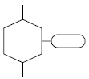
25. 인간의 위치 동작에 있어 눈으로 보지 않고 손을 수평 면상에서 움직이는 경우 짧은 거리는 지나치고, 긴 거리는 못 미치는 경향이 있는데 이를 무엇이라고 하는가?
26. 주어진 자극에 대해 인간이 갖는 변화감지역을 표현하는 데에는 웨버(Webber)의 법칙을 이용한다. 이 때 웨버(Webber) 비의 관계식으로 옳은 것은? (단, 변화감지역을 ΔI, 표준자극을 I라 한다.)
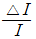
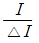
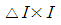
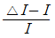
27. 다음 중 동작경제의 원칙에 있어 “신체사용에 관한 원칙”에 해당하지 않는 것은?
28. 실린더 블록에 사용하는 가스켓의 수명은 평균 10000시간이며, 표준편차는 200시간으로 정규분포를 따른다. 사용시간이 9600시간일 경우 이 가스켓의 신뢰도는 약 얼마인가? (단, 표준정규분포상 Z1=0.8413, Z2=0.9772 이다.)
29. 다음 중 인간공학을 나타내는 용어로 적절하지 않은 것은?
30. 다음 중 결함수분석의 기대효과와 가장 관계가 먼 것은?
31. 인체 계측 중 운전 또는 워드 작업과 같이 인체의 각 부분이 서로 조화를 이루며 움직이는 자세에서의 인체치수를 측정하는 것을 무엇이라 하는가?
32. 말소리의 질에 대한 객관적 측정 방법으로 명료도 지수를 사용하고 있다. 그림에서와 같은 경우 명료도 지수는 약 얼마인가?
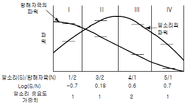
33. 휴식 중 에너지소비량은 1.5kcal/min이고, 어떤 작업의 평균 에너지소비량이 6kcal/min이라고 할 때 60분간 총 작업시간 내에 포함되어야 하는 휴식시간은 약 몇 분인가? (단, 기초대사를 포함한 작업에 대한 평균 에너지소비량의 상한은 5kcal/min이다.)
34. Rasmussen은 행동을 세 가지로 분류하였는데, 그 분류에 해당하지 않는 것은?
35. 다음 중 복잡한 시스템을 설계, 가공하기 전의 구상단계에서 시스템의 근본적인 위험성을 평가하는 가장 기초적인 위험도 분석기법은?
36. 다음 중 FTA에서 활용하는 최소 컷셋(Minimal cut sets)에 관한 설명으로 옳은 것은?
37. 다음은 유해.위험방지계획서의 제출에 관한 설명이다. ( ) 안의 내용으로 옳은 것은?
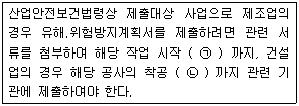
38. 다음 중 청각적 표시장치의 설계에 관한 설명으로 가장 거리가 먼 것은?
39. 다음 중 시스템 안전계획(SSPP, System Safety Program Plan)에 포함되어야 할 사항으로 가장 거리가 먼 것은?
40. 다음 중 감각적으로 물리현상을 왜곡하는 지각현상에 해당하는 것은?
3과목: 기계위험방지기술
41. 다음 중 산업안전보건법령상 아세틸렌 가스용접장치에 관한 기준으로 틀린 것은?
42. 다음 중 프레스를 제외한 사출성형기(射出成形機).주형 조형기(鑄型造形機) 및 형단조기 등에 관한 안전조치 사항으로 틀린 것은?
43. 비파괴 검사 방법 중 육안으로 결함을 검출하는 시험법은?
44. 와이어로프의 파단하중을 P(kg), 로프가닥수를 N, 안전 하중을 Q(kg)라고 할 때 다음 중 와이어로프의 안전율 S를 구하는 산식은?
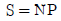
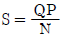
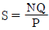
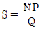
45. 무부하 상태에서 지게차로 20km/h의 속도로 주행할 때 좌우 안정도는 몇 % 이내이어야 하는가?
46. 선반작업 시 발생하는 칩(chip)으로 인한 재해를 예방하기 위하여 칩을 짧게 끊어지게 하는 것은?
47. 다음 중 선반의 안전장치 및 작업시 주의사항으로 잘못된 것은?
48. 완전회전식 클러치 기구가 있는 동력프레스에서 양수기동식 방호장치의 안전거리는 얼마 이상이어야 하는가? (단, 확동클러치의 봉합개소의 수는 8개, 분당 행정수는 250SPM을 가진다.)
49. 동력식 수동대패에서 손이 끼지 않도록 하기 위해서 덮개 하단과 가공재를 송급하는 측의 테이블 면과의 틈새는 최대 몇 mm 이하로 조절해야 하는가?
50. 산업안전보건법령에서 정한 양중기의 종류에 해당하지 않는 것은?
51. 다음 중 연삭기의 방호대책으로 적절하지 않은 것은?
52. 페일 세이프(fail safe)의 기계설계상 본질적 안전화에 대한 설명으로 틀린 것은?
53. 광전자식 방호장치의 광선에 신체의 일부가 감지된 후로부터 급정지기구가 작동개시 하기까지의 시간이 40ms이고, 광축의 설치거리가 96mm일 때 급정지기구가 작동개시한 때로부터 프레스기의 슬라이드가 정지될 때까지의 시간은 얼마인가?
54. 산업안전보건기준에 관한 규칙에 따라 기계.기구 및 설비의 위험예방을 위하여 사업주는 회전축.기어.풀리 및 풀라이휠 등에 부속되는 키.핀 등의 기계요소는 어떠한 형태로 설치하여야 하는가?
55. 다음 설명은 보일러의 장해 원인 중 어느 것에 해당되는가?
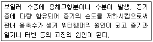
56. 다음 중 설비의 진단방법에 있어 비파괴시험이나 검사에 해당하지 않는 것은?
57. 산업안전보건법령에 따라 산업용 로봇의 작동범위에서 그 로봇에 관하여 교시 등의 작업을 할 때 작업 시작 전 점검사항이 아닌 것은?
58. 롤러기의 방호장치 설치 시 유의해야 할 사항으로 거리가 먼 것은?
59. 다음 중 가스용접토치가 과열되었을 때 가장 적절한 조치 사항은?
60. 프레스 작업 중 부주의로 프레스의 페달을 밟는 것에 대비하여 페달에 설치하는 것을 무엇이라 하는가?
4과목: 전기위험방지기술
61. 다음 ( ) 안에 들어갈 내용으로 알맞은 것은?
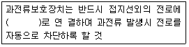
62. 제 3종 접지공사를 시설하여야 하는 장소가 아닌 것은?(관련 규정 개정전 문제로 여기서는 기존 정답인 3번을 누르면 정답 처리됩니다. 자세한 내용은 해설을 참고하세요.)
63. 3300/220V, 20kVA인 3상 변압기에서 공급받고 있는 저압전선로의 절연부분 전선과 대지간의 절열저항 최소값은 약 몇 Ω 인가? (단, 변압기 저압측 1단자는 제2종 접지공사를 시행함
64. 전격현상의 위험도를 결정하는 인자에 대한 설명으로 틀린 것은?
65. 폭발위험장소에서 점화성 불꽃이 발생하지 않도록 전기 설비를 설치하는 방법으로 틀린 것은?
66. 정전기를 제거하려 한 행위 중 폭발이 발생하였다면 다음 중 어떤 경우인가?
67. 온도조절용 바이메탈롸 온도 퓨즈가 회로에 조합되어 있는 다리미를 사용한 가정에서 화재가 발생했다. 다리미에 부착되어 있던 바이메탈과 온도퓨즈를 대상으로 화재사고를 분석하려 하는데 논리기호를 사용하여 표현 하고자 한다. 어느 기호가 적당하겠는가? (단, 바이메탈의 작동과 온도 퓨즈가 끊어졌을 경우를 0, 그렇지 않을 경우를 1이라 한다.)
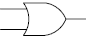
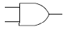
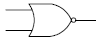
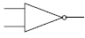
68. 스파크 화재의 방지책이 아닌 것은?
69. 제전기의 제전효과에 영향을 미치는 요인으로 볼 수 없는 것은?
70. 감전에 의해 호흡이 정지한 후에 인공호흡을 즉시 실시하면 소생할 수 있는데, 감전에 의한 호흡 정지 후 3분 이내에 올바른 방법으로 인공호흡을 실시하였을 경우 소생율은 약 몇 % 정도 인가?
71. 절연 안전모의 사용 시 주의사항으로 틀린 것은?
72. 폭발위험장소에서의 본질안전 방폭구조에 대한 설명으로 틀린 것은?
73. 인체가 현저하게 젖어있는 상태 또는 금속성의 전기기계 장치나 구조물에 인체의 일부가 상시 접속되어 있는 상태에서의 허용접촉전압은 일반적으로 몇 V 이하로 하고 있는가?
74. 정전기 발생현상의 분류에 해당되지 않는 것은?
75. 인체의 전기저항이 5000Ω이고, 세동전류와 통전시간과 의 관계를
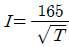
mA라 할 경우, 심실세동을 일으키는 위험 에너지는 약 몇 J 인가? (단, 통전시간은 1초로 한다.)76. 전선로 등에서 아크화상 사로 시 전선이나 개폐기 터미널 등의 금속 분자가 고열로 용융되어 피부 속으로 녹아 들어가는 현상은?
77. 아세톤을 취급하는 작업장에서 작업자의 정전기 방전으로 인한 화재폭발 재해를 방지하기 위하여 인체대전 전위는 약 몇 V 이하로 유지하여야 하는가? (단, 인체의 정전용량 100pF이고, 아세톤의 최소 착화 에너지는 1.15mJ로 하며 기타의 조건은 무시한다.)
78. 금속제 외함을 가지는 기계기구에 전기를 공급하는 전로에 지락이 발생했을 때에 자동적으로 전로를 차단하는 누전차단기 등을 설치하여야 한다. 누전차단기를 설치하지 않아도 되는 경우로 틀린 것은?
79. 심장의 맥동주기 중 어느 때에 전격이 인가되면 심실세동을 일으킬 확률이 크고 위험한가?
80. 뇌해를 받을 우려가 있는 곳에는 피뢰기를 시설하여야 한다. 시설하지 않아도 되 곳은?
5과목: 화학설비위험방지기술
81. 에틸에테르와 에틸알콜이 3:1로 혼합증기의 몰비가 각각 0.75, 0.25 이고 , 에틸에테르와 에틸알콜의 폭발하한값이 각각 1.9vol%, 4.3vol%일 때 혼합가스의 폭발하한값은 약 몇 vol%인가?
82. 다량의 황산이 가연물과 혼합되어 화재가 발생하였을 경우의 소화방법으로 적절하지 않은 방법은?
83. 폭발에 관한 용어 중 “BLEVE"가 의미하는 것은?
84. 다음 중 산업안전보건법상 공정안전보고서에 포함되어야 할 사항으로 가장 거리가 먼 것은?
85. 분진폭발의 특징으로 옳은 것은?
86. 반응폭발에 영향을 미치는 요인 중 그 영향이 가장 적은 것은?
87. 비중이 1.5이고, 직경이 74μm인 분체가 종말속도 0.2m/s로 직경 6m의 사일로(silo)에서 질량유속 400kg/h로 흐를 때 평균 농도는 약 얼마인가?
88. 마그네슘의 저장 및 취급에 관한 설명으로 틀린 것은?
89. 다음 중 중합반응으로 발열을 일으키는 물질은?
90. 유류저장탱크에서 화염의 차단을 목적으로 외부에 증기를 방출하기도 하고 탱크 내 외기를 흡입하기도 하는 부분에 설치하는 안전장치는?
91. 다음 중 화염방지기의 구조 및 설치 방법에 관한 설명으로 옳지 않은 것은?
92. 송풍기의 사상법칙에 관한 설명으로 옳지 않은 것은?
93. 다음 중 유해화학물질의 중독에 대한 일반적인 응급처치 방법으로 적절하지 않은 것은?
94. 반응기를 설계할 때 고려해야할 요인으로 가장 거리가 먼 것은?
95. 다음 [표]의 가스를 위험도가 큰 것부터 작은 순으로 나열한 것은?
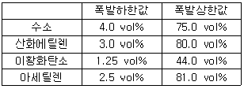
96. 산업안전보건법에서 규정한 급성독성물질은 쥐에 대한 4시간 동안의 흡입실험으로 실험동물 50%를 사망시킬 수 있는 농도(LC50)가 몇 ppm 이하인 물질을 말하는가?
97. 다음 중 자기반응성물질에 의한 화재에 대하여 사용할 수 없는 소화기의 종류는?
98. 가연성 가스에 관한 설명으로 옳지 않은 것은?
99. 아세틸렌가스가 다음과 같은 반응식에 의하여 연소할 때 연소열은 약 몇 kcal/mol 인가? (단, 다음의 열역학 표를 참조하여 계산한다.)
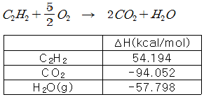
100. 화재감지기 중 연기감지기에 해당하지 않은 것은?
6과목: 건설안전기술
101. 다음 중 달비계 또는 높이 5m 이상의 비계를 조립ㆍ해체하거나 변경하는 작업을 하는 경우의 준수사항이다. 빈칸에 알맞은 숫자는?
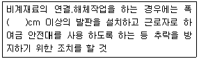
102. 다음 중 토사붕괴의 내적원인인 것은?
103. 철륜 표면에 다수의 돌기를 붙여 접지면적을 작게 하여 접지압을 증가시킨 롤러로서 고함수비 점성토 지반의 다짐작업에 적합한 롤러는?
104. 건설업 산업안전보건관리비 중 안전시설비로 사용할 수 없는 것은?
1⑤. 토공기계 중 클램쉘(clam shell)의 용도에 대해 가장 잘 설명한 것은?
106. 사면 보호 공법 중 구조물에 의한 보호 공법에 해당되지 않는 것은?
107. 추락재해 방지를 위한 방망이 그물코 규격 기준으로 옳은 것은?
108. 건설업 유해위험방지계획서 제출 시 첨부서류에 해당되지 않는 것은?
109. 인력운반 작업에 대한 안전 준수사항으로 가장 거리가 먼 것은?
110. 안전계수가 4이고 2000kg/cm2의 인장강도를 갖는 강선의 최대허용응력은?
111. 달비계의 와이어로프의 사용금지 기준에 해당하지 않는 것은?
112. 강관틀비계의 벽이음에 대한 조립간격 기준으로 옳은 것은? (단, 높이가 5m 미만인 경우 제외)
113. 터널공사에서 발파작업 시 안전대책으로 틀린 것은?
114. 다음은 타워크레인을 와이어로프로 지지하는 경우의 준수해야 할 기준이다. 빈칸에 알맞은 내용을 순서대로 옳게 나타낸 것은?
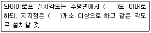
115. 콘크리트 타설시 거푸집 측압에 대한 설명 중 틀린 것은?
116. 훅걸이용 와이어로프 등이 훅으로부터 벗겨지는 것을 방지하기 위한 장치는?
117. 철골작업을 중지하여야 하는 기준으로 옳은 것은?
118. 건립 중 강풍에 의한 풍압 등 외압에 대한 내력이 설계에 고려되었는지 확인하여야 하는 철골주조물에 해당하지 않는 것은?
119. 가설통로를 설치하는 경우의 준수해야 할 기준으로 틀린 것은?
120. 지반조사 중 예비조사 단계에서 흙막이 구조물의 종류에 맞는 형식을 선정하기 위한 조사항목과 거리가 먼 것은?